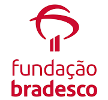
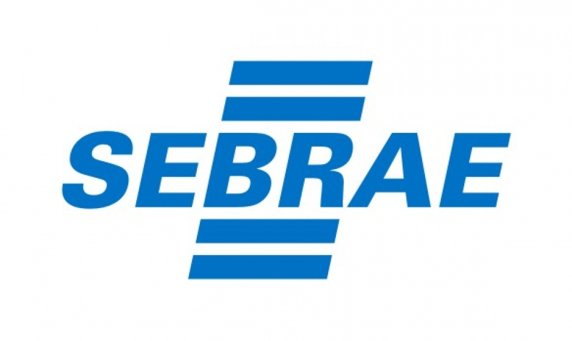

Joycecsilva19@gmail.com
(11)98696-1094
https://www.linkedin.com/in/joycecsilva07/
Tenho como objetivo aprimorar minhas habilidades
em Desenvolvimento de Sistemas,buscando oportunidades
que
me permitam crescer profissionalmente e alcançar excelência nesta área.
Profissional versátil e comprometida, com experiência consolidada em atendimento ao cliente. Atualmente cursando Desenvolvimento de Sistemas na Etec, busca oportunidades para aplicar seu conhecimento. Demonstrou liderança ao gerenciar estoque, escalas de folgas e compras, além de habilidades interpessoais no atendimento ao cliente, garantindo satisfação e fidelização. Possui certificações em Pacote Office, Power BI, Cake Design e Confeitaria, reforçando seu perfil multifacetado. Com paixão por aprender, está pronta para contribuir em projetos desafiadores e crescer profissionalmente.
Etec - Escola Técnica Estadual
Nome do Curso:Técnico em Desenvolvimento de Sistemas (Em andamento)
Ano:2/2024 - 7/2025
Instituição Centro Paula Souza (EJA)
Nome do curso: Ensino Médio (completo)
Ano de Conclusão:2018
Mercadinho Alves e Farias (Paraná Atacadista)- Julho de 2019 a Março de 2023 (3 anos e 8 meses)
Auxiliar de Padeiro (Último Cargo) - 1 ano e 8 meses
Produção de Confeitaria;
Controle de Qualidade;
Gerenciamento de Estoque;
Coordenação de Equipe;
Compras para o Estoque;
Higiene e Segurança;
Auxiliar de Perecíveis - 6 meses
Fatiamento de Frios;
Venda Produtos de Padaria;
Operadora de Caixa - 1 ano e 6 meses
Atendimento ao Cliente;
Registro de Transações;
Manuseio de Dinheiro;
Resolução de Problemas;
Abertura e Fechamento de Caixa;
Manutenção do Local de Trabalho
Colaboração com a Equipe;
Uso de Tecnologia de Ponto de Venda (PDV);
Curso #1
 Nome do curso:Lógica da programação
Nome do curso:Lógica da programação
Instituição: senac
Duração: Média (de 41 a 360 horas)
Ano de conclusão: 2024
Curso #2

Nome do curso: Python (Primeiro Módulo)
Instituição Fundação Bradesco
Duração: Curta (até 40 horas)
Ano de conclusão: 2023
Curso #3
Nome do curso: Pacote Office
Instituição: fundação Bradesco
Duração: Média (de 41 a 360 horas)
Ano de conclusão: 2023
Curso #4

Nome do curso: Atendimento Ao Cliente
Instituição: Sebrae
Duração: Curta (até 40 horas)
Ano de conclusão: 2023
Curso #5
Nome do curso: Confeitaria
Instituição: Instituto Mix
Duração: Média (de 41 a 360 horas)
Ano de conclusão: 2022